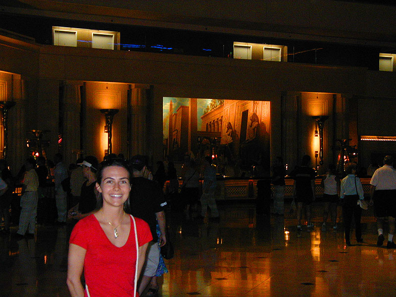

The Luxor
Hotel Lobby at the Luxor. In addition to lots of great statues including the enormous sphinx outside, the Luxor had a full scale reproduction of King Tut's Tomb. Amanda and I took the tour of it and learned a little bit more about Tut, although we were left with a few unanswered questions that we may have to research a little.
back to main page
